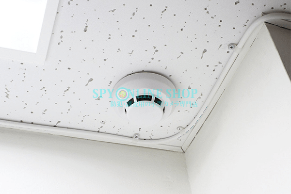
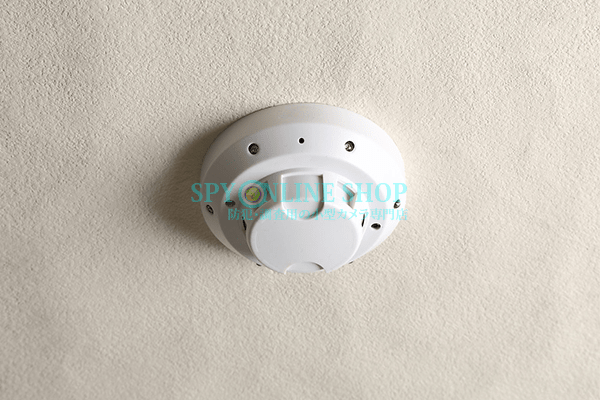
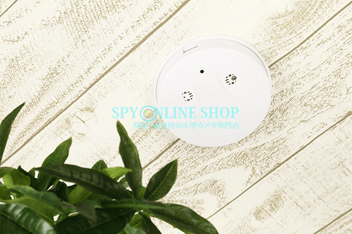

火災報知器型部門、人気Ｎｏ．１！

暖かかったり、寒かったり気温の変動が多い毎日ですが、
皆様いかがお過ごしですか？？
季節の変わり目は体調を崩しやすい時期でもありますので
皆様体調管理にお気を付けくださいませ！

今回は、「特集記事 人気ＮＯ.1を探れ！」と題し、
各カテゴリーごとの人気Ｎｏ．１の商品について、ＨＰよりももう少し詳しくその魅力をご紹介していきたいと思います！
記念すべき特集第一弾は・・・「火災報知器型カメラ」・・です！
ご自宅や事務所の防犯対策などを目的とされる方から特に人気の高い
【火災報知器型カメラ】
その中で、人気Ｎｏ．１の商品について、ググッと掘り下げて参ります・・・！
まずは、火災報知器型カメラのランキングをご紹介します・・！
売れ筋ベスト3
-

暗闇を感知して自動的に赤外線を照射する、「自動赤外線機能」を搭載した、
【SPF-HI】が人気ランキング堂々の第1位！
人気の高さから、在庫がなくなってしまうこともしばしば・・・(申し訳ございません・・((+_+)))
見つけたら、ラッキーな高性能モデルです！ -

こちらも赤外線機能付き！
赤外線機能だけでなく、強力な暗視補正機能も搭載した、暗闇対応可能な【SPF-2】が第2位！
天井から斜め45度くらいの角度で撮影するため、比較的広範囲撮影ができる点が人気の秘密です！ -

解像度1920*1080のフルHDで撮影ができる【SPF-3】が納得の第3位！
なんといっても画質がきれいなモデルで、暗い場所では使用できませんが、
狙ったピンポイントを、きれいな画像で撮影したい方にオススメの商品です。
と、いう事で人気Ｎｏ．１は【SPF-HI】となりました！
当店スタッフも納得のランキングです★
【SPF-HI】は、赤外線機能がついているのに、そこまで価格も高くなく、
画質もかなり綺麗で、コスパのいい商品なのではないでしょうか。
赤外線が操作をしなくても、暗闇を感知して自動的に照射されるのも簡単で便利ですよね！
そんな【SPF-HI】について寄せられるお問合せで、
特に多いお問い合わせをいくつかご紹介いたします！
Ｑ.micro SD(HC) cardの入れ方が分からない！
【SPF-HI】は他の商品とはmicro SD(HC) cardの入れ方が異なる為、よくご質問頂く内容です・・
スタッフでもちょっと、うまくいかない・・(´・ω・`)なんて時もあります。
でもご安心ください！
お客様へお届けする商品は、必ず動作の確認ができてから発送しておりますので
必ずmicro SD(HC) cardをセットできる商品しかお届けしません。
micro SD(HC) cardをセットする方法をおさめた映像がございますので、
ぜひ一度ご覧いただいて、挑戦してみてください！
【microSDcardの固定方法】
続いて・・・
Ｑ.買ったは良いけどどうやって天井に取り付けるの？
こちらも良く頂くご質問です。
【SPF-HI】を含め、火災報知器型カメラはすべて、取り付けと取り外しを簡単にできる
専用取り付けキットが付属しています！
今回は【SPF-HI】の取り付けキットの使用方法をご紹介する映像を作成しましたので
こちらを一度ご参照くださいませ！
【取り付けキットの使い方】
最後に・・・
Ｑ.真下じゃなくて、斜め下が撮れるって言うけど、どんな感じなの？
・・・そうですよね！広範囲って言ってもどのくらいなの！って気になるポイントですよね・・
こちらは、なかなか言葉で説明するのが難しい点です。
百聞は一見に如かず・・ということで、以前の特集記事でもご紹介しました、
実際に撮影した映像をご覧いただくのが一番かと思います！
こちらの特集記事「火災報知器を実際に取り付けて撮影してみました！」は
【SPF-HI】だけでなく、火災報知器型カメラ全機種の実際の映像が確認できますので、必見ですよ！！
是非ご参考になさってくださいね！
【火災報知器を実際に取り付けて撮影してみました！】
⇒特集記事はこちら！
いかがでしたでしょうか・・？
当店の火災報知器として不動の人気を誇る【SPF-HI】の事、少しは知って頂けましたでしょうか・・？
今後、他のカテゴリーの商品にもスポットライトを当ててご紹介して参りますのでどうぞ楽しみに・・！
それでは今回はこの辺で・・
また近々お会いしましょう・・！(＾ ＾)